회수하지 않으면
회수하지 않을 때 액체 CO2와 드라이아이스의 비율은 약 2.2~2.5:1입니다. 배출되는 가스는 이미 값을 치른 원료입니다.
- 비용
- 판매하지 못하는 CO2에도 비용을 냄
- 공급
- 액체 CO2 납품을 더 자주 받아야 함
- 배출
- 줄일 수 있는 CO2를 대기로 내보냄
드라이아이스 CO2 회수는 펠렛타이저가 배출하는 CO2 가스를 모아 다시 액화하고, 펠렛타이저로 되돌려 보내는 공정입니다.
Cold Jet의 RE-CO2는 Cold Jet 펠렛타이저와 다른 제조사의 펠렛타이저 대부분에 연결합니다. 드라이아이스 제조 업체에 맞는 구성을 안내합니다.
일반적인 드라이아이스 생산에서는 구매한 액체 CO2의 절반가량이 펠렛타이저에서 기체로 빠져나가 대기로 배출됩니다.
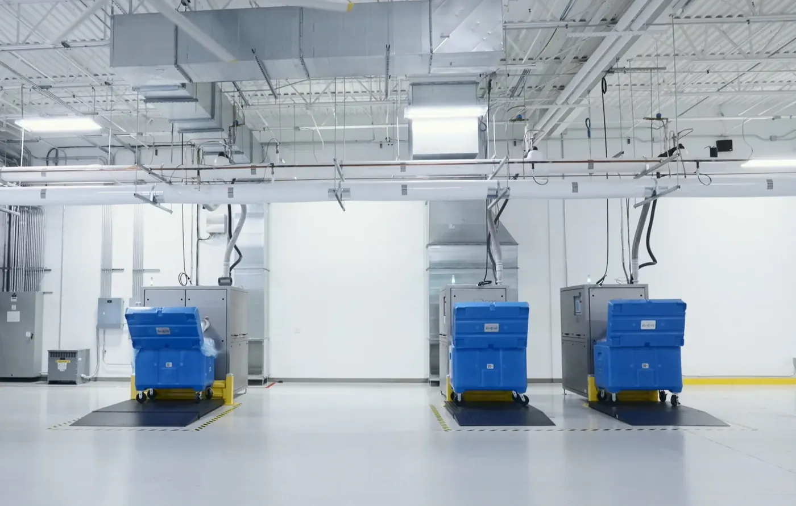
회수하지 않을 때 액체 CO2와 드라이아이스의 비율은 약 2.2~2.5:1입니다. 배출되는 가스는 이미 값을 치른 원료입니다.
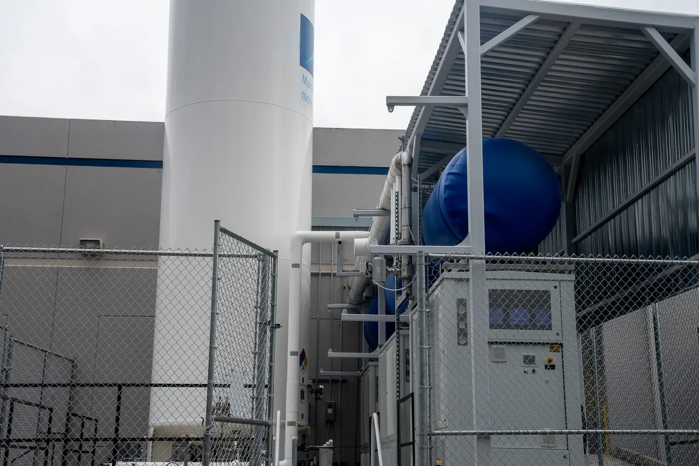
RE-CO2는 펠렛타이저가 배출하는 CO2 가스를 모아 다시 액화하고, 펠렛타이저의 공급 배관으로 되돌려 보냅니다.
펠렛타이저의 드라이아이스 생산은 그대로 두고, 배기구에서 나오는 가스만 따로 모아 처리합니다.
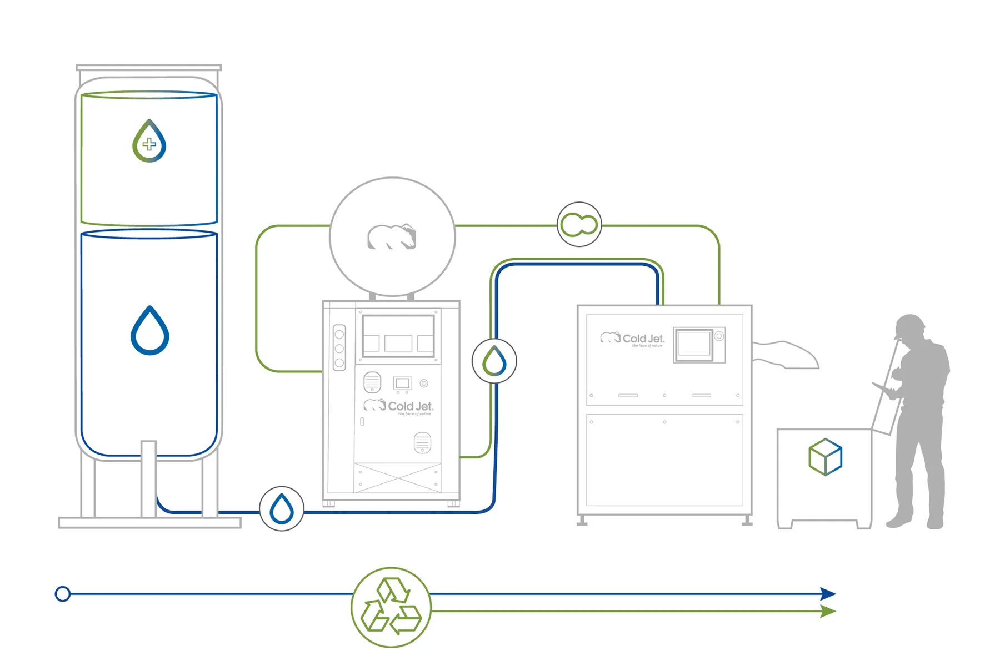
액체 CO2가 펠렛타이저 안에서 팽창하면 절반가량은 CO2 스노우가 되고 절반가량은 기체가 됩니다. 이 기체를 대기로 나가기 전에 모읍니다.
모은 가스를 냉각하고 압축해 다시 액체로 만듭니다. 전력 소비는 RE-CO2 80이 회수 1톤당 298 kWh, RE-CO2 3500이 135 kWh입니다.
액체가 된 CO2는 밸브를 거쳐 펠렛타이저의 공급 배관으로 들어갑니다. 가스 공급사가 금지하므로 벌크 탱크로는 되돌리지 않습니다.
버려지던 가스가 다시 원료가 되어 비용과 배출량이 함께 줄어듭니다. 아래 숫자는 Cold Jet이 공개한 수치이며, 실제 결과는 설비 구성과 운전 조건에 따라 달라집니다.
회수한 CO2가 펠렛타이저로 바로 돌아가므로 액체 CO2 사용량이 절반 가까이 줄어듭니다.
회수한 CO2가 다시 제품이 됩니다. 같은 양의 액체 CO2를 받아 더 많은 드라이아이스를 판매합니다.
탱크로리 충전 횟수가 줄고 탱크에 여유가 생깁니다. 납품 지연이나 지역 공급 부족으로 생산이 멈출 위험이 줄어듭니다.
폐쇄 루프 안에서 순환하므로 오염이 생기지 않습니다. 드라이아이스의 품질은 회수 전과 같습니다.
대기로 배출하는 CO2가 크게 줄어듭니다. 저탄소 드라이아이스 공급과 ESG 보고의 근거가 됩니다.
Cold Jet의 모든 펠렛타이저와 연결합니다. 다른 제조사의 펠렛타이저도 대부분 약간의 개조로 연결합니다.
RE-CO2 80, 160, 320 V2는 3상 전원만 있으면 되고, 물이나 계장 공기는 필요하지 않습니다.
모듈형이라 1대로 시작해 펠렛타이저의 배출구마다 장비를 더할 수 있습니다.
드라이아이스를 만들어 판매하는 업체와, 자체 블라스팅 작업에 쓰려고 생산하는 업체 모두에 해당합니다. 회수의 효과가 나타나는 곳이 서로 다릅니다.
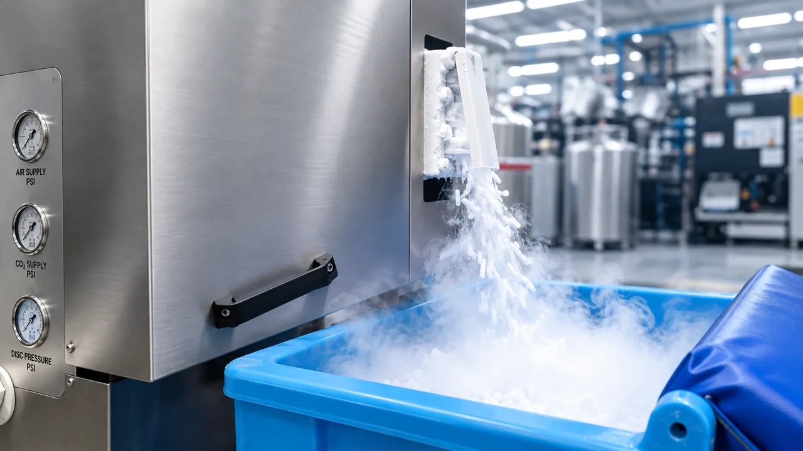
회수한 CO2만큼 톤당 원가가 낮아지고 판매할 물량이 늘어납니다. 1대로 시작해 펠렛타이저의 배출구마다 장비를 더할 수 있습니다.
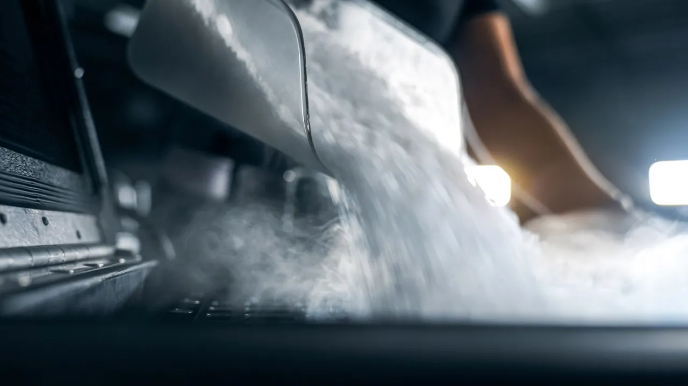
세척 작업 한 건에 드는 CO2 비용이 낮아집니다. 필요할 때 3 mm 펠렛을 바로 만들어 쓰므로 납품을 받는 횟수도 줄어듭니다.
지금 쓰는 펠렛타이저에 배관과 회수 장비를 더하는 구성입니다.
지금 쓰는 펠렛타이저에서 시작합니다. Cold Jet의 모든 펠렛타이저와 다른 제조사의 펠렛타이저 대부분에 연결합니다.
호스나 배관으로 배기 CO2를 회수 장비로 보냅니다. 용량에 맞는 릴리프 밸브가 배압을 범위 안에서 유지합니다.
배기 가스를 압축하고 냉각해 다시 액체 CO2로 만듭니다. 펠렛타이저가 여러 대인 공장에는 컨테이너형 RE-CO2 3500을 씁니다.
회수한 액체 CO2는 펠렛타이저의 공급 배관으로 들어갑니다.
실외에 설치할 때는 비바람을 막고 공기가 잘 통하게 합니다. RE-CO2 3500은 컨테이너에 담겨 공급됩니다.
설치를 마치면 시운전과 가동, 운전 교육을 진행합니다. RE-CO2 320 V2는 펠렛타이저의 조작 화면(HMI)에서 운전합니다.
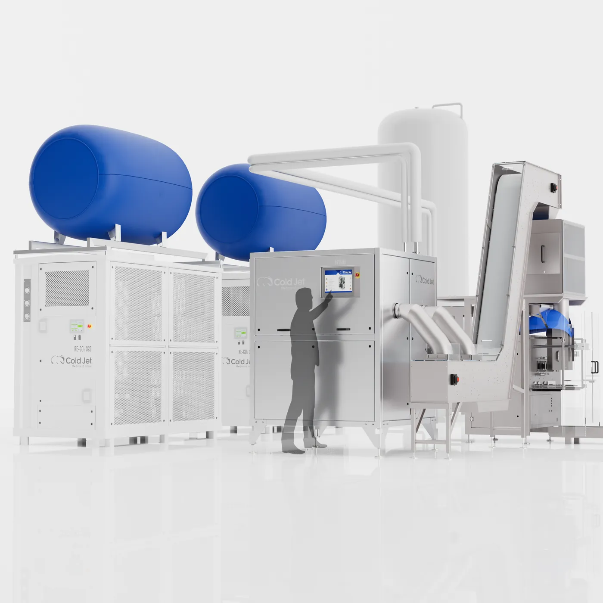
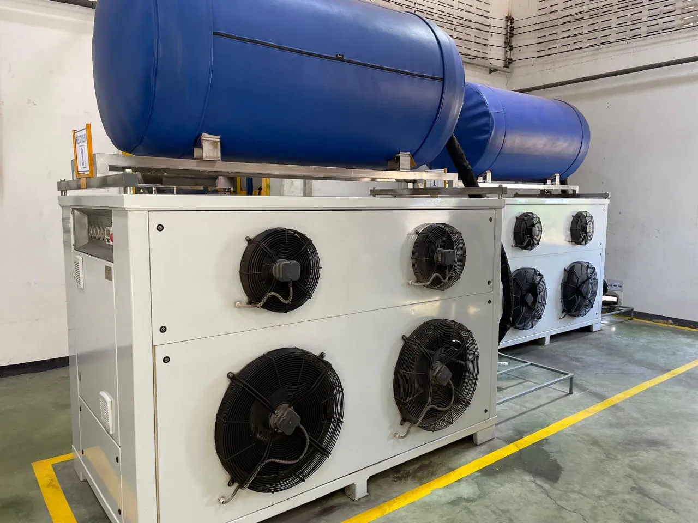
함께 운용하는 펠렛타이저의 종류와 생산량에 맞춰 회수 용량을 고릅니다. 표준 모델 외에 시간당 1,200 kg부터 5,000 kg까지의 맞춤형 구성도 있습니다.
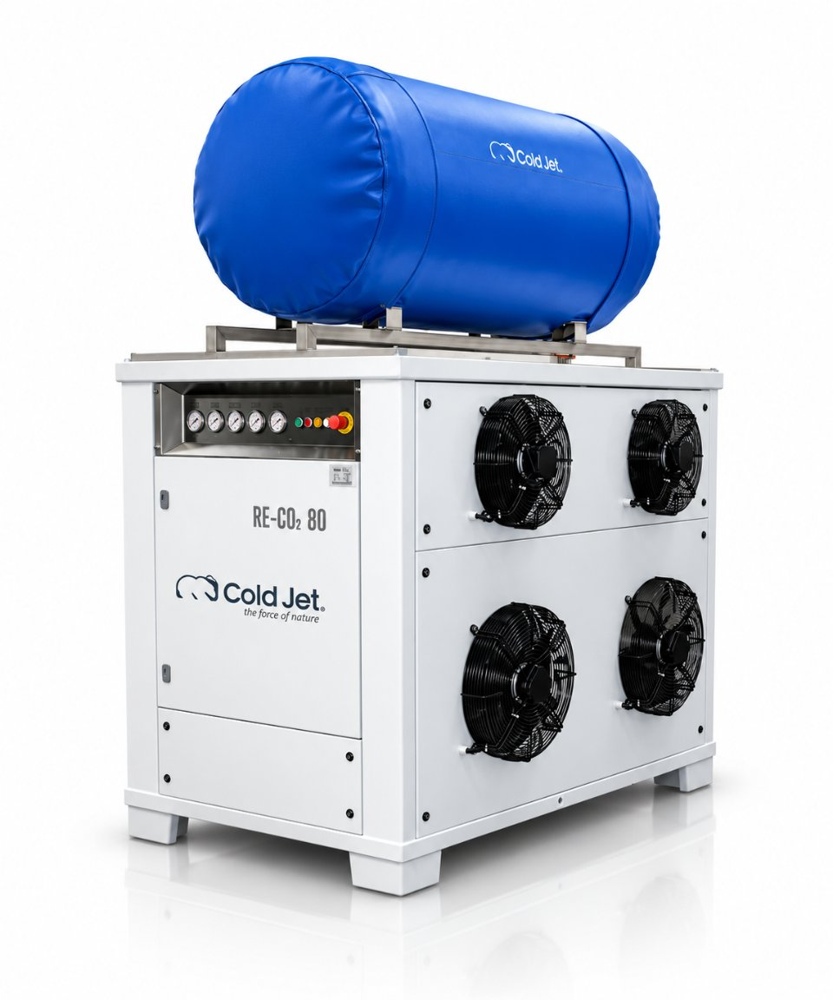
PE 80 펠렛타이저와 결합합니다. 회수 1톤당 298 kWh의 전력을 씁니다.
모델 상세 보기→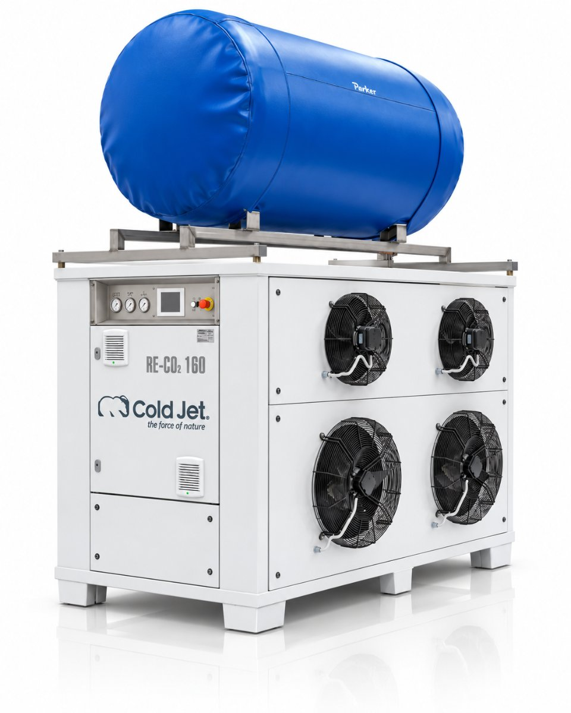
PR120H 펠렛타이저와 결합합니다. 3상 전원만 연결합니다.
모델 상세 보기→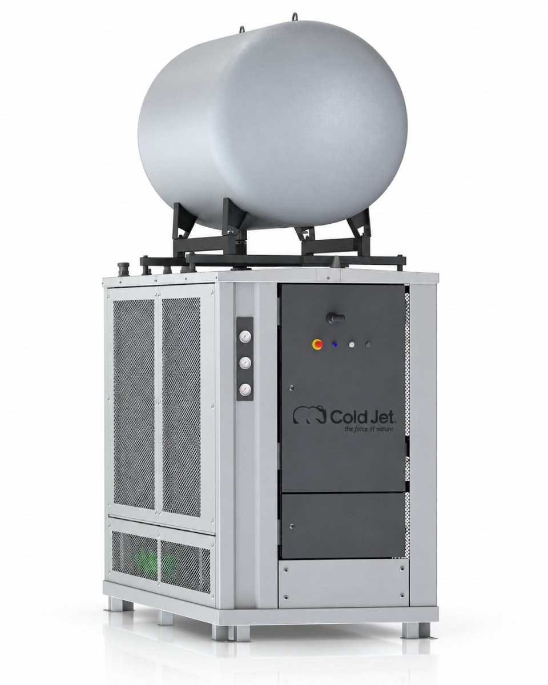
PR350H에는 1대, PR750H에는 2대를 결합합니다. 버퍼 탱크가 포함되어 있습니다.
모델 상세 보기→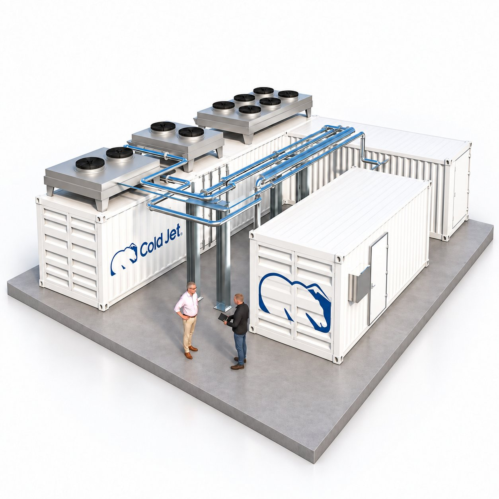
여러 대의 PR750H에 대응합니다. R744 냉매를 쓰고, 회수 1톤당 135 kWh의 전력을 씁니다.
모델 상세 보기→모델별 사양과 펠렛타이저 조합, 회수 용량 선정은 CO2 리커버리 페이지에서 볼 수 있습니다.
사용 중인 펠렛타이저와 시간당 생산량, 월간 액체 CO2 사용량, 설치할 공간을 알려 주시면 공장에 맞는 회수 용량과 구성을 검토해 드립니다.
바테크는 Cold Jet의 대한민국 공식 대리점으로 검토부터 설치, 교육과 A/S까지 지원합니다. 모델별 사양은 CO2 리커버리 페이지에서 먼저 확인하실 수 있습니다.